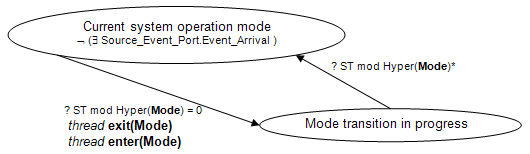

(1) A SOM transition is initiated whenever a mode transition trigger event (see also Section 12) occurs in any modal component in the system instance. A single sent event or event data can trigger a mode switch request in one or more components. In a synchronized system, this trigger event occurs logically simultaneously for all components and the resulting component mode transition requests are treated as a single SOM transition.
(2) Several events may occur logically simultaneously and may originate from different ports of the same component, e.g., through a Send_Output service call with multiple ports as parameter, or from different components at the same time. If they are semantically connected to transitions in different components that lead out of their current mode or to different transitions out of the same mode in one component, then events are treated as independent SOM transition initiations.
(3) If multiple SOM transition initiations occurs logically simultaneously, one is chosen in an implementation-dependent manner. If an Urgency property is associated with each port named in mode transitions, then the mode transition with the highest port urgency takes precedence. If several ports have the same urgency then the mode transition is chosen non-deterministically.
(4) A mode transition of a thread internal mode, i.e., a mode declared in the thread or one of its subprograms, that is triggered by the component itself or is triggered by an event or data arriving ata port of the thread, takes place at the next thread dispatch. For further detail see Section 5.4.5.
(5) A mode transition of a processor, device, bus, or memory internal mode, i.e., a mode declared in the component implementation, that is triggered by the component itself or is triggered by an external event, takes place immediately.
The next paragraphs address mode transitions that involve activation and deactivation of threads and connections.
(6) If a mode transition has a Mode_Transition_Response property value of Emergency, the mode_transition_in_progress state is entered in zero time and the actual SOM transition is performed immediately. In this case all threads in the performing state that have to be deactivated are aborted.
(7) After an event triggering a SOM transition request has arrived, the actual SOM transition occurs as a Planned response, if the mode transition does not have a Mode_Transition_Response property value of Emergency. In this case, execution continues under the old SOM until the dispatches of a critical set of periodic components (threads and devices), which are active in the old SOM, align at their hyperperiod. At that point the mode_transition_in_progress state is entered. A component is considered critical if it has a Synchronized_Component property value of true. If the set of critical components is empty, the mode_transition_in_progress state is entered immediately. This is indicated in Figure 23.
(8) by the guard of the function Hyper(Mode) on the transition from the current_system_operation_mode state to the mode_transition_in_progress state.
(9) Until the mode_transition_in_progress state is entered, any mode transition trigger event with the same or lower urgency that would result in a SOM transition from the current SOM is ignored. A trigger event with higher urgency supersedes the event under consideration for determining the SOM transition at the time the mode_transition_in_progress state is entered.
(10) A runtime transition between SOMs requires a non-zero interval of time, during which the system is said to be in transition between two system modes of operation. While a system is in transition, excluding the instants of time at the start and end of a transition, all mode transition trigger events are ignored with respect to mode transitions.
(11) The system is in a mode transition in progress state for a limited amount of time. This is determined by the maximum time required to perform all deactivations and activations of threads and connections (see below), increased to the next multiple of the hyperperiod of a non-zero set of critical components that continue to execute, i.e., periodic threads that are active in the old and in the new SOM and have a Synchronized_Component property value of true. This is shown in Figure 23.
(12) by the guard of the function Hyper(Mode)* on the transition from the mode_transition_in_progress state to the current_system_operation_mode state. After that period of time, the component is considered to operate in the new mode and the active threads in the new mode start to execute.
(13) At the time the mode_transition_in_progress state is entered there are several kinds of threads
· Continuing threads: threads that continue to execute because they are active in the old mode and active in the new mode;
· Activated threads: threads that are inactive in the old mode and are active in the new mode;
· Deactivated threads: threads that are active in the old mode, not active in the new mode, and whose dispatches align at the hyperperiod;
· Zombie threads: aperiodic, sporadic, timed, or hybrid threads as well as periodic threads that are active in the old mode and not active in the new mode and whose dispatches are not aligned at the hyperperiod, i.e., they may still be in the perform thread computation state (see Figure 5) and may have events or event data in their port queues.
(14) At the instant of time the mode_transition_in_progress state is entered, connections that are part of the old SOM and not part of the new SOM are disabled.
(15) While in the mode_transition_in_progress state, for all connections between data ports that are declared to be active in the current mode transition and whose source threads have completed execution at the time the mode_transition_in_progress state is entered, data is transferred from the out data port such that its value becomes available at the first dispatch of the receiving thread.
(16) At the instant in time the mode_transition_in_progress state is exited, connections that are not part of the old SOM and are part of the new SOM are enabled. At that time the new current SOM is entered and the following hold for data port connections. The data value of the out data port of the source thread is transferred into the in data port variable of the newly enabled thread, unless the in data port of the destination thread is the destination of a connection active in the current mode transition.
(17) While in the mode_transition_in_progress state, all continuing threads continue to get dispatched and execute, but will only use connections that are active in both the old and the new SOM.
(18) When the mode_transition_in_progress state is entered, thread exit(Mode) is triggered to deactivate all threads that are part of the old mode and not part of the new mode, i.e., the set of deactivated threads. This results in the execution of deactivation entrypoints for those threads (see Figure 5).
(19) When the mode_transition_in_progress state is entered, thread enter(Mode) is triggered to activate threads that are part of the new mode and not part of the old mode, i.e., the set of activated threads. This permits those threads to execute their activation entrypoints (see Figure 5).
(20) There is no requirement that all deactivation entrypoint executions complete before any activation entrypoint executions start. The maximum execution time for the deactivations and activations is the maximum deadline of the respective entrypoints.
(21) Zombie threads may be stopped at actual mode switch time, they may be suspended, or they may complete their execution while mode transition is in progress. The Active_Thread_Handling_Protocol property specifies for each such thread what action is to be taken at the time the mode_transition_in_progress state is entered.
(22) The default action is to stop the execution of the zombie thread and execute its recover entrypoint indicating an stop for deactivation - effectively handling them like deactivated threads. This permits the thread to recover to a consistent state for future activation, including the release of resources held by the thread. Upon completion of the recover entrypoint, execution the thread enters the suspended awaiting mode state; event and event data port queues of the thread are flushed by default or remain in the queue until the thread is activated again as specified by the Active_Thread_Queue_Handling_Protocol property. If the thread was executing a remotely called subprogram, the current dispatch execution of the calling thread of a call in progress or queued call is also aborted. In this case the recover entrypoint deadline is taken into account when determining the duration of the mode_transition_in_progress state.
(23) Other actions are project-specific implementor provided action and may include:
· Suspend the execution of the zombie thread for resumption the next time the thread is part of a new mode. This action is only safe to use if the thread does not hold the lock to a shared resource.
· Complete_one permits the thread to complete the execution of its current dispatch and invoke its deactivation entrypoint. Any remaining queued events, or event data may be flushed, or remain in the queue until the thread is activated again, as specified by the Active_Thread_Queue_Handling_Protocol property. The output is held and communicated according to the connections when the thread is reactivated. In this case the execution of the zombie thread competes for execution platform resources.
· Complete_all permits the thread to finish processing all events or event data in its queues at the time the actual mode switch state is entered. The output is held and communicated according to the connections when the thread is reactivated. When execution completes the deactivation entrypoint is executed. In this case the execution of the zombie thread competes for execution platform resources.
(24) At the next multiple of the SOM transition hyperperiod the system instance enters current_system_operation_mode state and starts responding to new requests for SOM transition.

Figure 23 System Mode Transition Semantics
(25) The synchronization scope for enter(Mode) consists of all threads that are contained in the system instance that were inactive and are about to become active. The synchronization scope for exit(Mode) contains all threads that are contained in the system instance that were active and are to become inactive. The edge labels enter(Mode) and exit(Mode) also appear in the set of concurrent semantic automata derived from the mode declarations in a specification. That is, enter(Mode) and exit(Mode) transitions for threads occur synchronously with a transition from the current_system_operation_mode state to the mode_transition_in_progress state.
(26) The description of this time-coordinated transitioning of system operation mode assumes a synchronous system, i.e., a single synchronization domain. In the case of an asynchronous system, multiple synchronization domains exist in a system. In this case, the coordinated activation and deactivation of threads and connections as part of a system operation mode transition must be ensured within each synchronization domain. In the case of an asynchronous system, coordination protocols may be supported to coordinate system operation mode transition across synchronization domains within bounded time.